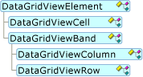
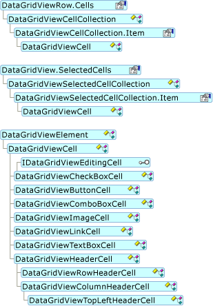
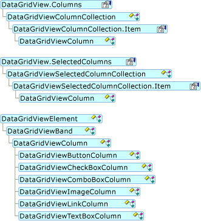
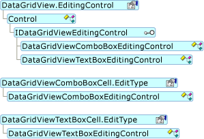
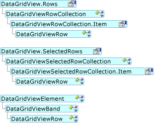

Архитектура элементов управления DataGridView (Windows Forms)
DataGridView Управления и связанные с ним классы предназначены для гибкую, расширяемую систему для отображения и редактирования табличных данных. Все эти классы содержатся в System.Windows.Forms пространства имен и они именуются с префиксом «DataGridView».
Элементы архитектуры
Основной DataGridView сопутствующих классов являются производными от DataGridViewElement. Приведенные ниже объектные модели иллюстрирует DataGridViewElement иерархии наследования.

DataGridViewElement Класс предоставляет ссылку на родительский DataGridView а State свойство, которое содержит значение, которое представляет собой сочетание значений из DataGridViewElementStates перечисления.
В следующих разделах описываются DataGridView сопутствующих классов более подробно.
DataGridViewElementStates
DataGridViewElementStates Перечисление содержит следующие значения:
Значения этого перечисления могут сочетаться с побитовые логические операторы, поэтому State свойство можно выразить несколько состояний одновременно. Например DataGridViewElement может быть одновременно Frozen, Selected, и Visible.
Ячейки и зоны
DataGridView Элемент управления состоит из двух основных типов объектов: ячейки и зоны. Все ячейки, являются производными от DataGridViewCell базового класса. Два вида делений, DataGridViewColumn и DataGridViewRow, оба являются производными от DataGridViewBand базового класса.
DataGridView Управления взаимодействует с несколькими классами, но чаще всего встречаются DataGridViewCell, DataGridViewColumn, и DataGridViewRow.
DataGridViewCell
Ячейка является основной единицей взаимодействия для DataGridView. Отображение выравнивается по центру ячейки и ввода данных часто выполняется по ячейкам. Доступ к ячейкам с помощью Cells коллекцию DataGridViewRow , поэтому для доступа к выбранным ячейкам используется SelectedCells коллекцию DataGridView элемента управления. Приведенные ниже объектные модели показан пример использования и показывает DataGridViewCell иерархии наследования.

DataGridViewCell Тип является абстрактным базовым классом, от которого наследуют все типы ячеек. DataGridViewCell и его производные типы не являются элементы управления Windows Forms, но некоторые элементы управления ведущего приложения Windows Forms. Любые изменения функциональных возможностей, поддерживаемых ячейки обычно обрабатывается размещаемого элемента управления.
DataGridViewCell объекты контролирует собственные внешним видом и оформлением так же как элементы управления Windows Forms. Вместо этого DataGridView несет ответственность за внешний вид его DataGridViewCell объектов. Вы может существенно повлиять на внешний вид и поведение ячеек, взаимодействуя с DataGridView свойства и события элемента управления. При наличии особых требований к настройкам, выходящих за рамки возможностей DataGridView элемента управления, можно реализовать собственный класс, производный от DataGridViewCell или одного из его дочерних классов.
В следующем списке приведены классы, производные от DataGridViewCell:
Пользовательские типы ячеек
DataGridViewColumn
Схема DataGridView элемента управления хранилища данных выражается в DataGridView столбцов элемента управления. Вы можете получить доступ к DataGridView столбцов элемента управления с помощью Columns коллекции. Доступ к выбранным столбцам с помощью SelectedColumns коллекции. Приведенные ниже объектные модели показан пример использования и показывает DataGridViewColumn иерархии наследования.

Некоторые типы ключей ячейки имеют соответствующие типы столбцов. Они являются производными от DataGridViewColumn базового класса.
В следующем списке приведены классы, производные от DataGridViewColumn:
Пользовательские типы столбцов
Элементы управления редактирования DataGridView
Ячейки, которые обычно поддерживают расширенные функции редактирования используйте размещаемого элемента управления, который является производным от элемента управления Windows Forms. Эти элементы управления также реализовать IDataGridViewEditingControl интерфейс. Приведенные ниже объектные модели иллюстрирует использование этих элементов управления.

Следующие элементы управления редактирования входящие в состав DataGridView управления:
Сведения о создании собственных редактирования элементов управления, см. в разделе как: Ведущие элементы управления в формах Windows Forms ячеек элемента управления DataGridView.
В следующей таблице показано отношение между типов ячеек, типы столбцов и элементами управления.
DataGridViewRow
DataGridViewRow Хранения класс отображает поля данных записи из данных, к которому DataGridView присоединяется элемент управления. Вы можете получить доступ к DataGridView строк элемента управления с помощью Rows коллекции. Выбранные строки доступны посредством SelectedRows коллекции. Приведенные ниже объектные модели показан пример использования и показывает DataGridViewRow иерархии наследования.

Можно создавать производные пользовательские типы из DataGridViewRow класса, несмотря на то, что это обычно не нужно выполнять. DataGridView Элемент управления имеет несколько событий, связанных со строками и свойств для настройки поведения его DataGridViewRow объектов.
Если вы включаете DataGridView элемента управления AllowUserToAddRows , отдельную строку для добавления новых строк отображается как последняя строка. Эта строка является частью Rows коллекции, но он имеет специальные функции, которые могут потребовать вашего внимания. Дополнительные сведения см. в разделе с помощью строки для новых записей в элементе управления DataGridView Windows Forms.